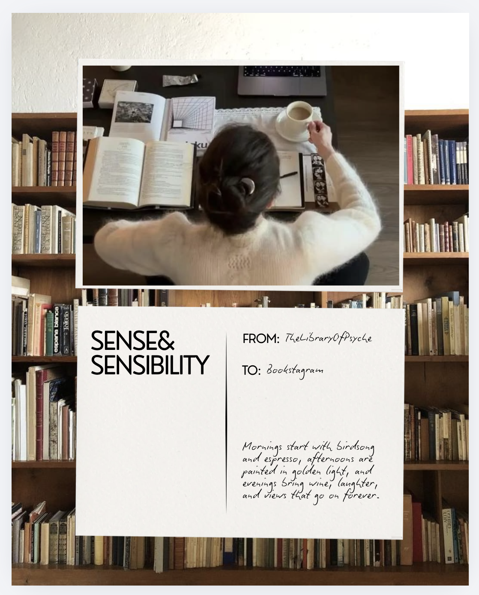
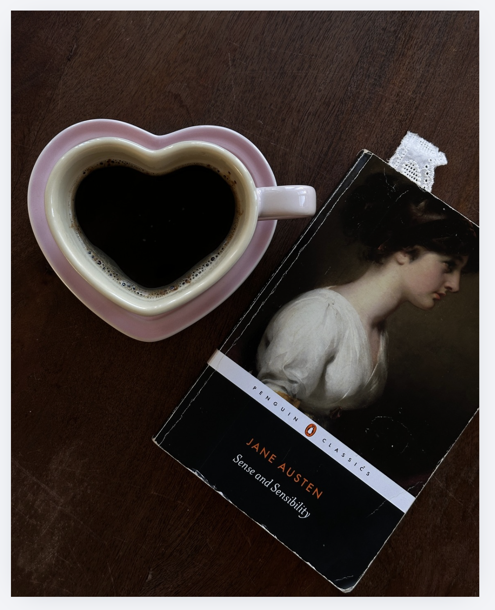
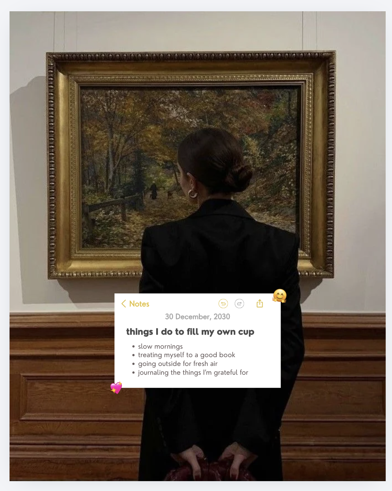
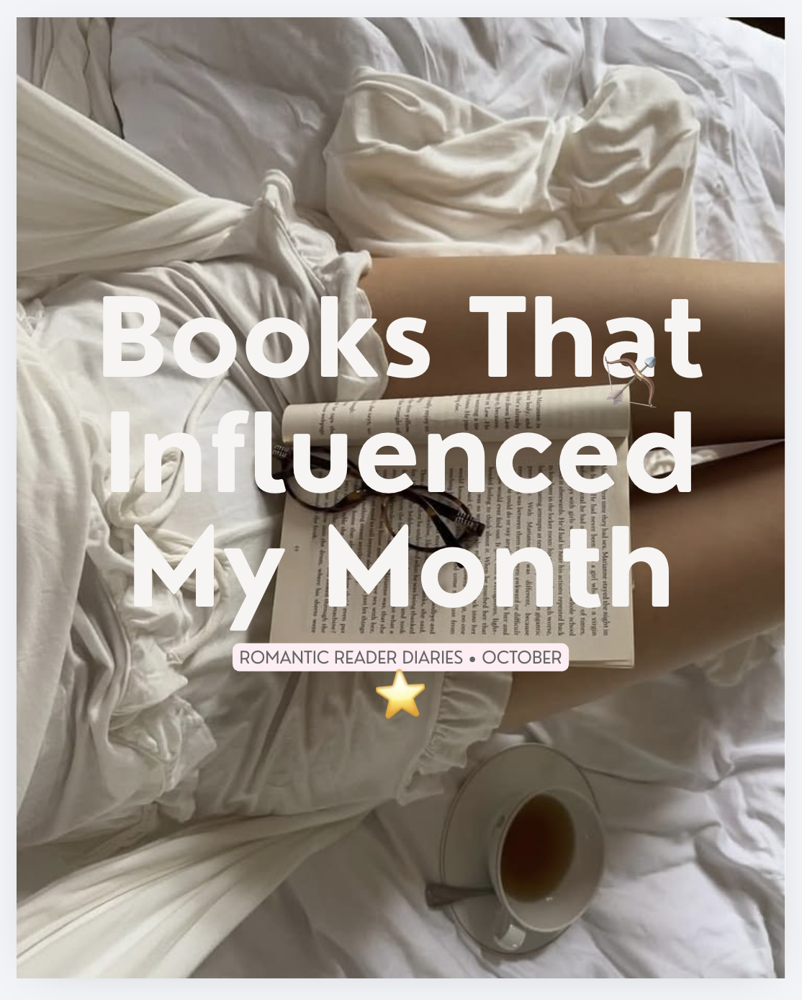
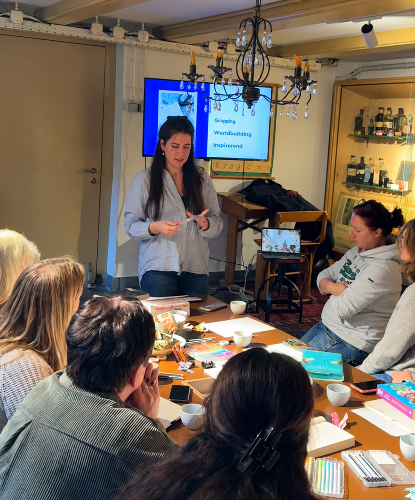
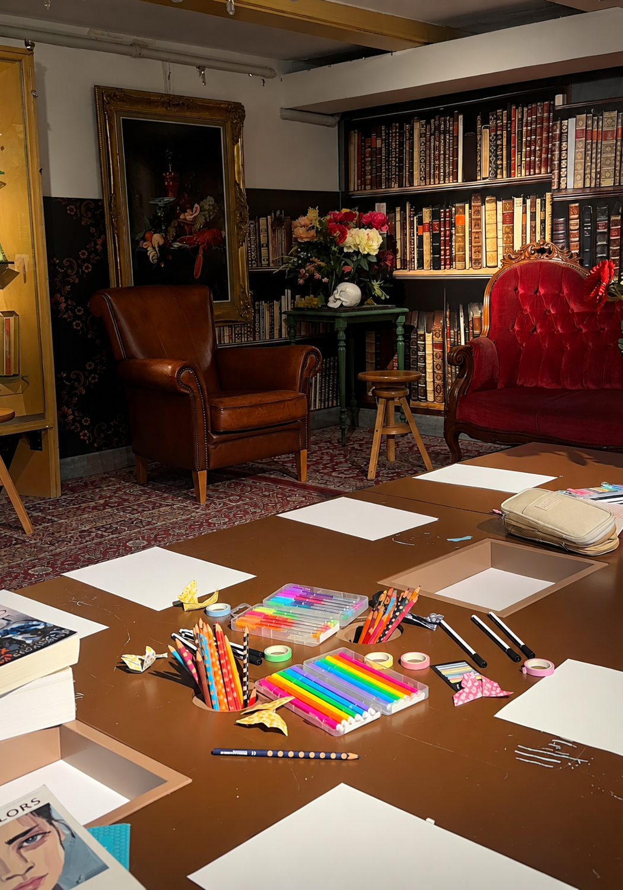
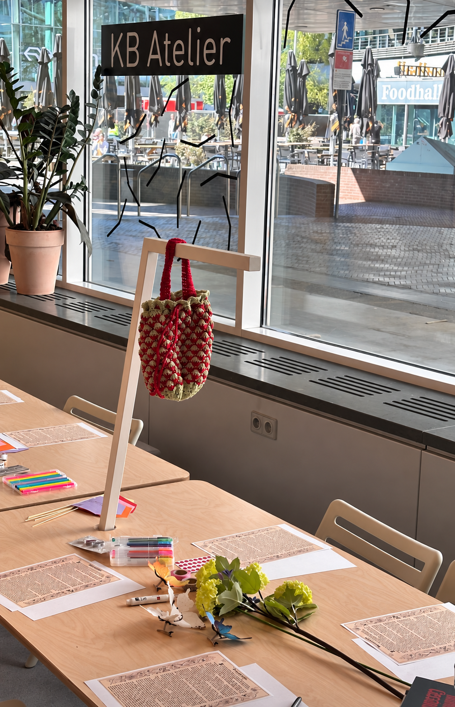

Letters from my reading life
Personal letters after the last page. The feelings, questions, and small details a book leaves behind.
READING, REFLECTION & LITTLE RITUALS
For the pleasure of a few pages, a quiet afternoon, and a life with room for stories.
Follow my reading life
A NOTE FROM ME
The Library of Psyche is my corner for the quiet joy of reading and everything that gathers around it: a familiar cup, a beautiful library, a thought scribbled down before it slips away.
Here, there is room to read slowly, return to old favourites, and simply enjoy being a reader.
Find my everyday reading life on InstagramTHE COLLECTION
Letters, rituals, and fragments to return to.
A glimpse into my recurring series · visual concepts

Personal letters after the last page. The feelings, questions, and small details a book leaves behind.
A book, something warm, and a moment to settle in. Small postcards from whatever I’m reading.

Fragments from my notes app: things I’m noticing, little comforts, and thoughts I want to remember.

A month remembered through its reading moments, places, and the stories that coloured everyday life.
BEYOND THE PAGES
Reading becomes something we leave a little of ourselves in: a thought in the margin, a passage marked, a question to come back to.
In my annotation workshop, I brought readers together around books, notes, and a table of colourful materials. A space to explore a more personal, creative relationship with the page.
Enquire about a workshop ↗


CORRESPONDENCE
Have a question, a creative idea, or a collaboration in mind? I’d love to hear from you.
thelibraryofpsyche@gmail.comI welcome enquiries about literary, lifestyle, and creative partnerships that feel at home in this reading life.
For collaboration and affiliate enquiries, share your idea, timing, and proposed terms.
Any future gifted, sponsored, or affiliate content will be clearly identified. Creative opinions remain my own.